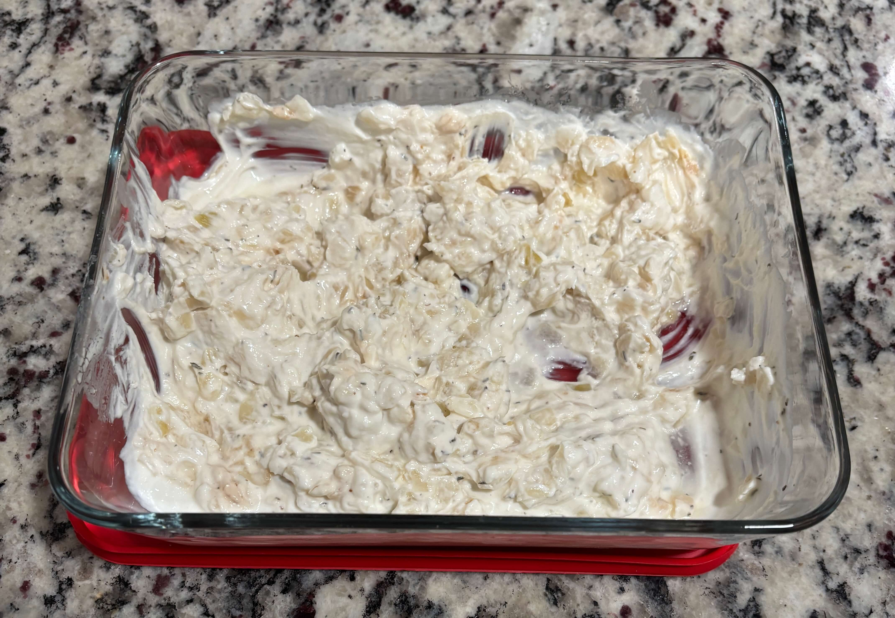

Home
French Onion Dip

Prep: 10 min, Cooke: 20 min, Total: 30 min
Ingredients
- 2 cups greek yogurt
- 1 large yellow onion diced
- 1 tbsp olive oil
- 1 tsp garlic powder
- 1/2 tsp worcestershire sauce
- Salt and pepper
- Optional: a pinch of dried thyme or fresh chives for garnish
Steps
- Heat olive oil in a skillet ovr medium low heat. Add the diced onions and a pinch of salt. Cook stirring occasionally, for 15-20 minutes until they are a deep golden brown. If they stick, add a splash of water. Let them cool completely
- In a medium bowl, combine the greek yogurt, garlic powder, worcestershire sauce, and the cooled onions
- Let the dip sit in the fridge for at least 30 min before serving. This allows the onion to infuse into the yogurt
- Pair with chips, carrots, or cucumber slices for dipping
Tips
- If you're using frozen onions thaw and drain them first. If you put them in the pan frozen they will boil instead of brown